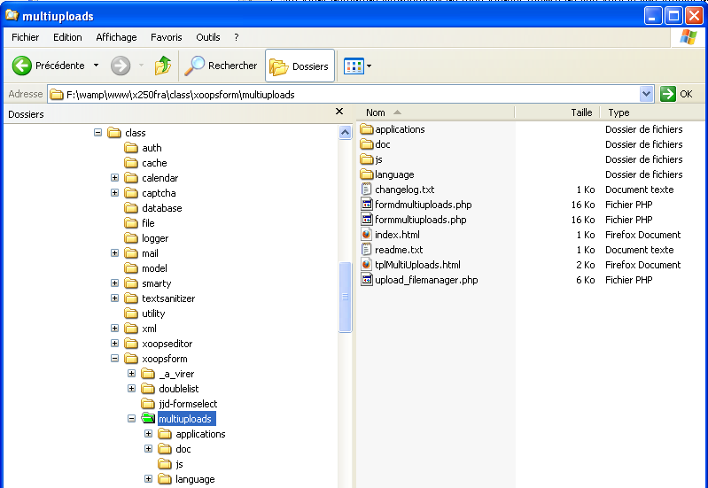
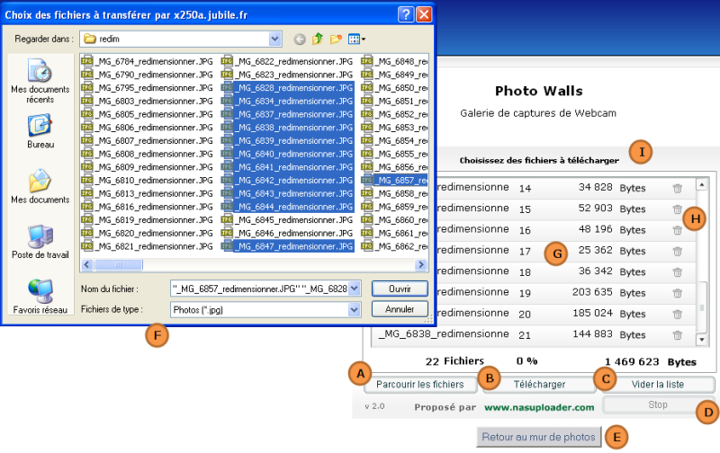

MultiUploads version 2.0 pour Xoops
Ce composant permet de télécharger plusieurs fichiers
simultanément.
Il est composé un objet flash qui permet : d'une part une sélection
multiple, d'autre par de suivre et contrôler le téléchargement selon
des critères prédéfini:
Le composant permet également d'autres contrôles comme:
Ce composant est une adaptation du projet "NAS Uploader", qui est le seul source qui a fonctionné du premier coup et simplement lors de mes tests préliminaires.
Toutefois, j'ai corrigé quelques anomalies récurrentes, et ajouté pas mal de fonctionnalités, notamment sur le contrôles des extensions, la taille et le nombre des fichiers, le comportement du flash, le passage de paramètres, ainsi que sur la langue d'affichage de l'interface, les messages d'anomalies, l'appel d'une fonction callback, etc. ...
Afin de respecter les règle de préséance, voici le read.me
original.
Je vous invite à vous rendre sur le site de l'auteur NAS Uploader, un
petit mot est toujours agréable.
| NAS Uploader est un
système
d'upload multifichiers en Flash très simple à installer et à paramétrer. NAS Uploader NE peut PAS être vendu. Utilisation gratuite, Open source. Je vous demande simplement de bien vouloir mettre un lien vers le site officiel de NAS Uploader www.nasuploader.com sur votre site ou de laisser celui présent dans l'animation flash. Si vous êtes vraiment altruiste vous pouvez même faire un don depuis le site officiel. N'hésitez pas à m'envoyer un petit mail avec vos remarques et commentaires et aussi l'adresse du ou des sites sur lesquels vous utilisez NAS Uploader :) ça fait toujours plaisir. Version 1.5 http://www.nasuploader.com |
Copier le dossier complet dans le répertoire "class/xoopsform/" du site.

Tous les fichiers ne sont pas nécessaires et si vous voulez
économiser
l'espace disque, supprimer les fichiers inutiles pour l'exploitation du
composant en vous aidant du tableau ci-dessous:
Si vous souhaiter intégrer complètement le composant dans
Xoops
il vous faut également modifier des fichiers du noyau.
Ces modification ne sont utiles que pour éviter de faire une inclusion
de
la classe à chaque fois que le composant est utilisé.
Bien que je vous le déconseille pour éviter les problèmes de mise à
jour de Xoops voir le chapitre "intégration dans xoops" pour effectuer
ces adaptations.
Si vous avez besoins de limiter l'espace occupé, vous pouvez vous aider du tableau ci dessous pour ne mettre que les fichiers réellement utile. attention de respecter toutefois les directives de la licence d'utilisation.
Les
fichiers "index.html"
ne sont pas listés dans ce tableau, mais doivent
restés ans chaque dossier pour empêcher leur parcours via le navigateur.
| Dossier |
Fichier | Description |
Prod |
Dev |
Doc |
| multiuploads |
changelog.txt | Historique du
composant |
X | ||
| formdmultiuploads.php | Classe xoopsform à
inclure dans
le projet |
X | |||
| readme.txt | Information sur
l'origine de ce
composant |
X | |||
| tplMultiUploads.html | Template utilisé
par le composant pour l'insertion dans une page HTML. |
X | |||
| upload_filemanager.php | Fichier de
réception des fichier en téléchargement. Appelé régulièrement par le Flash.. C'est ici que le fichier et la fonction callback sera inclus (voir plus bas les options du composant). |
X | |||
| /applications/ |
multiUploader.fla | Source Flash du
composant
(utiliser flash 8 si vous souhaitez faire des modifications) |
X | ||
| multiUploader.swd | Généré par Flash
pendant la
conception |
X | |||
| multiUploader.swf | Objet Flash inséré
dans la page HTML |
X | |||
| /doc/ | multiuploads-french.html | documentation
française du composant |
X | ||
| multiuploads-english.html | documentation anglaise du composant | X |
|||
| /js/ |
jsscript.js | Javascript utilisé
pour dialoguer avec le Flash. |
X | ||
| swfobject.js | Javascript qui
permet la création de l'objet Flash. |
X | |||
| /language/french/ |
libelles.txt | Traduction
française des libellés utilisés dans le flash. |
X | ||
| main.php | Traduction
française des message renvoyés par le fichier "upload_filemanager.php". |
X | |||
| /language/english/ | libelles.txt | Traduction anglaise des libellés utilisés dans le flash. | X | ||
| main.php | Traduction anglaise des message renvoyés par le fichier "upload_filemanager.php". | X |

| A | Ouvre l'explorateur de fichier en multi sélection.Seul les fichiers correspondant aux extensions paramètrées sont listés. |
| B | Lance le téléchargement. Une barre de progression apparait pour chaque fichier ainsi q'un iône tournant qui indique le oichier en cours de téléchargement. |
| C | Un fois la sélection faite ou le téléchargement terminé, vide la liste des fichier et permet une sélection. |
| D | Stop le téléchargement en cours. L'arrêt sera effectif à la fin du fichier courant. |
| E | Bouton de retour à une page du module, à dfinir dans le template du module. |
| F | Explorateur de fichier. Il peut différer selon le
système du poste local. Le libellé de la liste déroulante et la liste des extensions sont ceux passés en paramètre dans le constructeur. |
| G | Liste des fihciers à télécharger avec leur taille en octet. |
| H | La corbeile permet de supprimer des fichiers de la liste avant de lancer le téléchargement. |
| I | titre correspondant à "$caption" du constructeur. |
| xoops_load('XoopsFormMultiUploads'); |
| 'xoopsformmultiuploads'
=>
XOOPS_ROOT_PATH . '/class/xoopsform/multiuploads/formmultiuploads.php', |
//inclure la classe dans le cas ou le composant n'est pas intégré dans xoops
include_once ( XOOPS_ROOT_PATH . "/class/xoopsform/multiuploads/formmultiuploads.php");
//Instanciation de la classe
$objMU = new XoopsFormMultiUploads ($caption,
$libExtension,
$extensions,
$uploadFolder,
$redirectToAfter,
$overWrite = 0,
$btnUploadHtmlVisible = false) ;
//Affichage du sélecteur dans un template.
$xoopsTpl->assign('multiUploads', $objMU->render());
//ou bien directement:
// echo $objMU->render();
| Paramètre |
type | Défaut | description |
| $caption | string |
Obligatoire |
Titre affiché |
| $libExtension | string |
Obligatoire | Libellé de la liste
des extensions. Ce
libellé est affiché dans la liste déroutante des type de fichiers dans
l'explorateur de sélection des fichiers. |
| $extensions | Obligatoire | Liste des
extensions de filtrage séparée par des virgules. exemple: "jpg,jpeg,jpe,gif,png,tif,tiff" |
|
| $uploadFolder | string |
Obligatoire | Répertoire de
destination des fichiers à télécharger. Le chemin doit être relatif à la racine du site , et doit commencé par un "/" exemple: " /uploads/photowalls//original". Le dossier doit exister et être en chmod "0777". |
| $redirectToAfter | string |
chaine vide |
Url de redirection
en fin de téléchargement. Si c'est une chaîne vide la page aucune redirection 'est faite et on reste sur la page de sélection des fichiers, ce qui permet de faire plusieurs téléchargements. Si ce paramètre n'est pas vide, le composant et le bouton sous le sélecteur sont en capsulés dans une balise "<form>", et à la fin du téléchargement, le formulaire est validé, ce qui provoque une redirection sur cette URL. Cela permet d'enclencher par exemple un traitement automatique à la fin du téléchargement. L'url doit être relative à la racine du site. exemple: "/modules/photowalls/wall.php?op=buildThumbs&idPhotoWalls=2" |
| $overWrite | int |
0 |
Action a effectué
dans le cas ou un fichier de même nom existe déjà dans le dossier
spécifié: 0 = Not upload (Le fichier est rejeté) 1 = upload and overWrite the file (Le fichier existant est écrasé) 2 = upload and rename the file with random (le fichier est renommé pour conserver l'ancien) |
| $btnUploadHtmlVisible | bool |
false |
Dans le composant
d'origine il était
possible de lancer le téléchargement via un bouton externe au
composant, via du javascript. Cette option a été gardé. |
//inclusion de la classe dans le cas oule composant n'est pas intégrer dans Xoops
include_once ( XOOPS_ROOT_PATH . "/class/xoopsform/multiuploads/formmultiuploads.php");
//Instancation de la classe
$objMU = new XoopsFormMultiUploads ("Sélectionné vos photos à télécharger",
"Images",
"jpg,jpeg,jpe,gif,png,tif,tiff",
"/modules/photowalls/wall.php?op=buildThumbs&idPhotoWalls=2",
"",
0,
false) ;
//affichage du sélecteur
$xoopsTpl->assign('multiUploads',$objMU->render());
| setExtensions | Prototype: function setExtensions($extName, $extList = '',$sep=',') |
| Paramètres $extName : libellé affiché ans la liste déroutante des types de fichier de l'explorateur $extList : listes des extensions à filtrer séparée par $sep $sep : Séparateur de la liste des extensions |
|
| Commentaires: également passé en paramètre dans le constructeur |
|
| setUploadFolder | Prototype: function setUploadFolder($uploadFolder) |
| Paramètres: $uploadFolder : Dossier de destination des fichiers à télécharger |
|
| Commentaires: également passé en paramètre dans le constructeur Le chemin doit être relatif à la racine du site , et doit commencé par un "/" exemple: " /uploads/photowalls//original". Le dossier doit exister et être en chmod "0777". |
|
| setUrlGetData | Prototype: function setUrlGetData($urlGetData) |
| Paramètres: $urlGetData : Permet de récupérer des paramètres lors de l'affichage du composant dans la page HTML. |
|
| Commentaires: Cette options n'est pas utilisée, mais a été gardée pour des raison de compatibilité avec la version originale. |
|
| setOverWrite | Prototype: function setOverWrite($overWrite) |
| Paramètres: $overWrite : Action a effectué dans le cas ou un fichier de même nom existe déjà dans le dossier spécifié: 0 = Not upload (Le fichier est rejeté) 1 = upload and overWrite the file (Le fichier existant est écrasé) 2 = upload and rename the file with random (le fichier est renommé pour conserver l'ancien) |
|
| également passé en paramètre dans le constructeur | |
| getBtnUploadHtmlVisible | Prototype: function setBtnUploadHtmlVisible($btnUploadHtmlVisible) |
| Paramètres : $btnUploadHtmlVisible : Dans le composant d'origine il était possible de lancer le téléchargement via un bouton externe au composant, via du javascript. Cette option a été gardée par soucis de compatibilité. |
|
| également passé en paramètre dans le constructeur. | |
| setRedirectToAfter | Prototype: function setRedirectToAfter($redirectToAfter) |
| Paramètres: $redirectToAfter : Url de redirection en fin de téléchargement. Si c'est une chaîne vide la page aucune redirection 'est faite et on reste sur la page de sélection des fichiers, ce qui permet de faire plusieurs téléchargements. Si ce paramètre n'est pas vide, le composant et le bouton sous le sélecteur sont en capsulés dans une balise "<form>", et à la fin du téléchargement, le formulaire est validé, ce qui provoque une redirection sur cette URL. Cela permet d'enclencher par exemple un traitement automatique à la fin du téléchargement. L'url doit être relative à la racine du site. exemple: "/modules/photowalls/wall.php?op=buildThumbs&idPhotoWalls=2" |
|
| également passé en paramètre dans le constructeur. | |
| setMaxFiles | Prototype: function setMaxFiles($maxFiles) |
| paramètres: $maxFiles : nombre de fichiers maximum téléchargeables simultanément. La valeur par défaut est de 16 fichiers. Si $maxFiles = 0, le nombre de fichier est illimité. |
|
| Attention, il est préférable de limiter le nombre de fichiers quitte à refaire un autre téléchargement. | |
| setMaxSize | Prototype: function setMaxSize($maxSize) |
| paramètres: $maxSize : Taille maximum en octet des fichiers à téléchargé. Sil des fichiers dépasse ce cota, il ne sont pas traités. La valeur par défaut est 200 000 octets soit 200 ko. |
|
| Commentaires: Si $maxSize = 0 la taille est illimité. |
|
| setCallForEachPhoto | Prototype: function setCallForEachPhoto($includePageforEachPhoto, $function2callForEachPhoto) |
| Paramètres: $includePageforEachPhoto : Chemin d'un fichier php a inclure automatiquement dans le composant $function2callForEachPhoto : Nom d'une fonction contenu dans le fichier inclus |
|
| Commentaires: Cette option permet de faire un appel à une fonction de callback à la fin de chaque fichier téléchargé. Dans le module photowalls, cela permet notamment de créer les vignettes, et les images tatouées au fur et à mesure que les fichiers sont téléchargés. Elle peut être utilisée également pour ajouter des enregistrement dans une table. Cette options peut remplacer avantageusement le paramètre "redirectTo" qui permettra de faire quelque chose d'équivalent, mais à la fin du téléchargement. Le fichier inclus doit faire partie du module qui exploite le composant. Prototype de fonction callback: function maFonctionCallBack($flashParams){} La fonction reçoit en paramètres un tableau associatif de toutes les variables qu'a reçues le composant flash ainsi que le nom complet et le nom court du nouveau fichier qui vient d'être téléchargé. exemple de tableau associatif reçu par la fonction: $flashParams = array( [dossierup] => /uploads/photowalls/wall/original [overwrite] => 2 [maxFiles] => 100 [maxSize] => 250000 [language] => french [urlFlash] => http://localhost/x250fra/class/xoopsform/multiuploads [urlGetData] => [extLib] => Photos [extList] => jpg [idPhotoWalls] => 1 [idWaterMarks] => 2 [includePageforEachPhoto] => /modules/photowalls/toDoForEachFile.php [function2callForEachfiles] => buildTWM [fullName] => F:/wamp/www/x250fra/uploads/photowalls/wall/original/_MG_6844_redimensionner_937.JPG [fileDataName] => _MG_6844_redimensionner_937.JPG ) Important: C'est à la fonction callback de définir le comportement à avoir sur le fichier d'origine. Par exemple dans le module photowalls, si la vignette ou l'image tatouée n'ont pu être générés, la fonction callback supprime tous les fichiers qui auraient pu être générés ainsi que le fichier original. Très important : Cette fonction est appelée via une requête "HttpRequest" (ajax), Il est primordial qu'il n'y est aucun affichage avec la fonction "echo" ou "print" sous peine d'avoir un message d'erreur à la fin du téléchargement du fichier. Le mode "debug" est désactivé, donc aucune possibilité de contrôler les erreurs ou les requêtes effectuées; Je vous conseille donc de développer la fonction callback dans un environnement de test qui vous permettra de la mettre au point, puis ensuite de l'intégrer dans votre module. |
|
| addVars | Prototype: function addVars($key, $val) |
| Paramètres: $key : Clé d'un tableau associatif $val : Valeur du tableau associatif |
|
| Commentaires: Cette fonction ajoute une liste de paramètres dans un tableau associatif. Touts les items de ce tableau sont renvoyés dans le tableau associatif "flasshParams" de la fonction "callback". Cela permet par exemple de récupérer un identifiant ou tout autre valeur qui pourra être exploité dans la fonction "callback". Dans le module "photowalls", cela permet de passer l'identifiant du mur de photo. |
|
| render | Prototype: function render() |
| Paramètres: aucun | |
| Renvoi le code HTML pur l'affichage du sélecteur de fichier dans la page du site. |
| libelle.txt | Ce fichier contient les traductions des libellés utilisés dans le Flash. | Utilisé par le Flash |
| main.php | Ce fichier contient notamment les messages d'erreurs survenu pendant le téléchargement et renvoyés par le fichier ."upload_filemanager.php" qui réceptionne le fichier. | Utilisé par PHP |
lib_chooseFile=Choisissez des fichiers à télécharger
&lib_uploadRun=Téléchargement en cours ...
&lib_clearList=Vider la liste
&lib_browse=Parcourir les fichiers
&lib_upload=Télécharger
&lib_files=Fichiers
&lib_bytes=Bytes
&lib_propulse=Proposé par
&lib_siteAuthor=www.nasuploader.com
&lib_uploadFinished=Téléchargement terminé
&lib_max_files_overload=Le maximum de fichiers à été dépassé
&lib_max_file_to_big=Le fichier est trop gros
&lib_stop_upload=Arrêter
&lib_upload_stoped=Téléchargement arrêté par l'utilisateur
<?php
define ('_MU_AM_FOR_DOWNLOAD','To uploader photos, you must get');
define ('_MU_AM_PLAYER', 'the player flash');
define ('_MU_AM_ERR_FILE_EXIST', 'Un fichier porte déjà ce nom dans ce dossier');
define ('_MU_AM_ERR_WRITING', 'Erreur d\'écriture');
define ('_MU_AM_ERR_FILE_TO_BIG', 'Fichier trop volumineux');
define ('_MU_AM_ERR_FILE_UNCOMPLET', 'Fichier incomplet');
define ('_MU_AM_ERR_NO_FILE', 'Pas de fichier');
define ('_MU_AM_ERR_NO_TMP', 'Erreur serveur (pas de dossier tmp)');
define ('_MU_AM_ERR_UNKNOW', 'Erreur inconnue');
define ('_MU_AM_ERR_UNCORECT', 'Extension incorrecte');
define ('_MU_AM_ERR_NO_FILE_SEND', 'No file send');
define ('_MU_AM_ERR_FILE_NOT_VALID', 'this file type is not valid');
define ('_MU_AM_ERR_CALLBACK', 'Error in the callback of the module');
?>
*
*
*